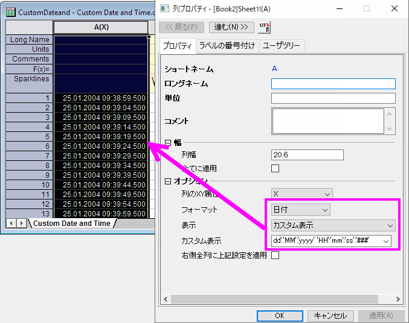

FAQ-472 データが希望の表示フォーマットと一致しない場合データフォーマットの設定方法は？
Convert-Date-Format
最終更新日：2020/10/14
Originの最近のバージョンでは、特に一般的に認識されている日時フォーマットの形式を自動的に処理するText/CSVデータコネクタが追加されたことで、日時データのインポートがはるかに簡単になりました。
とはいえ、特に標準ではない日時フォーマットを使用している場合は、インポート時に日時データが自動的にフォーマットされない状況が発生する可能性があります。ワークシートのセル内のデータの配置を確認することで、問題をすばやく見つけることができます。日時データが左揃えの場合、日時（数値として内部的に保存される）ではなくテキストとして扱われます。このFAQは、日時データを希望の形式で表示する方法を示しています。
テキストデータを数値データに変換したり、データの表示形式を変更したりするには、次の手順に従います。
- 列ヘッダをダブルクリックして列プロパティダイアログを開き、フォーマットを日付.に設定します。
- 表示リストをクリックして、リストから対応する日時構文文字列を選択し、適用をクリックします。日時構文のガイドラインについては、ワークシートの日付と時刻を参照してください。
- リストから適切なフォーマットが利用できない場合は、2つの方法のいずれかで独自のフォーマットを定義できます（前のリンクの構文を参照）。
- メニューの環境設定：オプションからダイアログを開き、その他のオプションタブでお好みのカスタム日付フォーマット文字列を事前定義します。この文字列は、表示リストから使用できる2つの "グローバルカスタム"表示形式のうちの1つとして表示されます。
- 表示をカスタム表示に設定し、使用可能になったカスタム表示ボックスに文字列を直接入力します。カスタムフォーマットはカスタム表示リストに追加され、今後のセッションで使用できます。
- 
キーワード: フォーマット, 日付, 表示